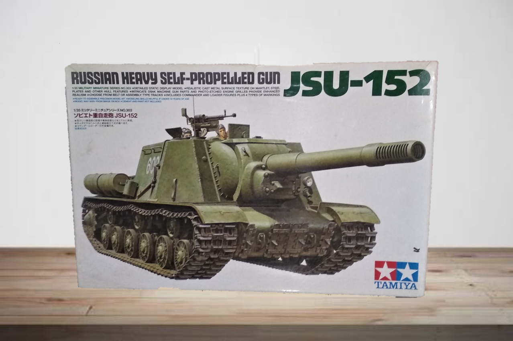
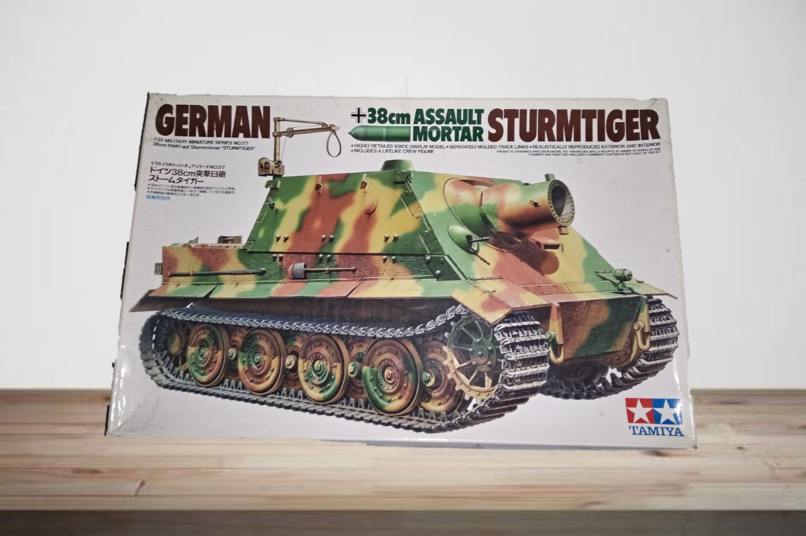
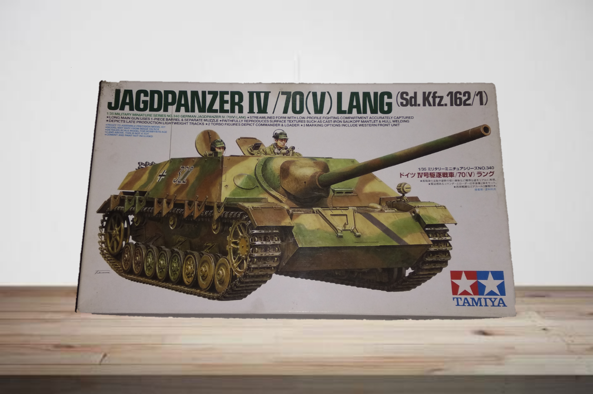
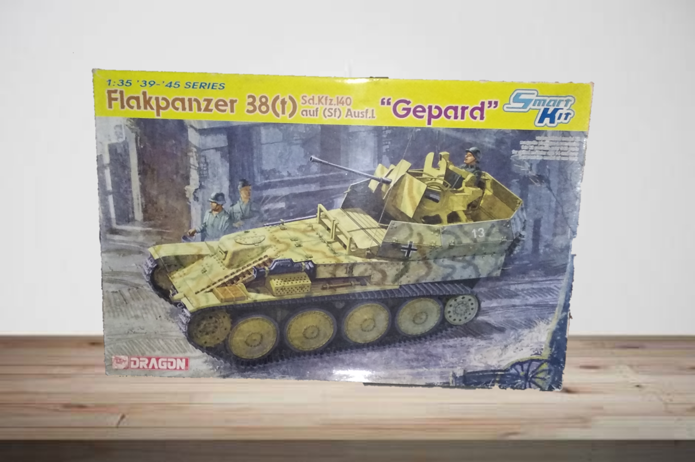
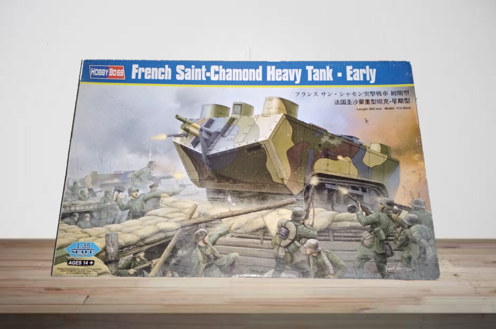
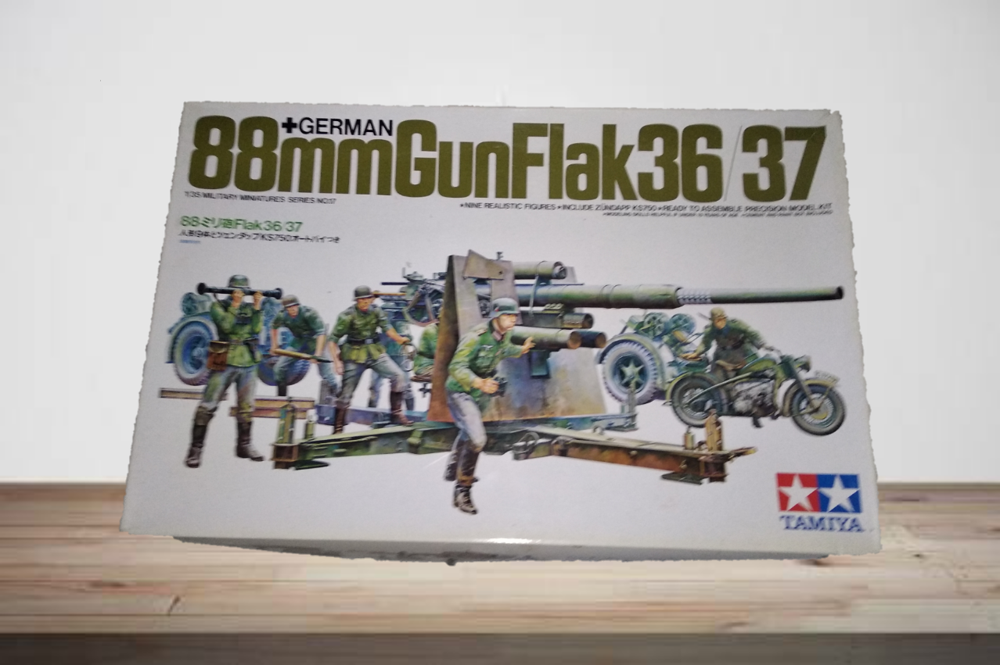

|  |  |  |
|
1. JSU-152
Merek : Tamiya |
2. Sturmtiger (German)
Merek : Tamiya |
3. Jagdpanzer IV/70(V) Lang
Merek : Tamiya |
|  |  |  |
|
4. Flakpanzer 38(t) Sd.Kfz.140
Merek : Dragon |
5. French St.Chamond Heavy Tank
Merek : HobbyBoss |
6. German 88mm Gun Flak36/37
Merek : Tamiya |

|
||
|
©Copyright 2021 WarFigs. All Right Reserved DM @Marsello_or for more information |